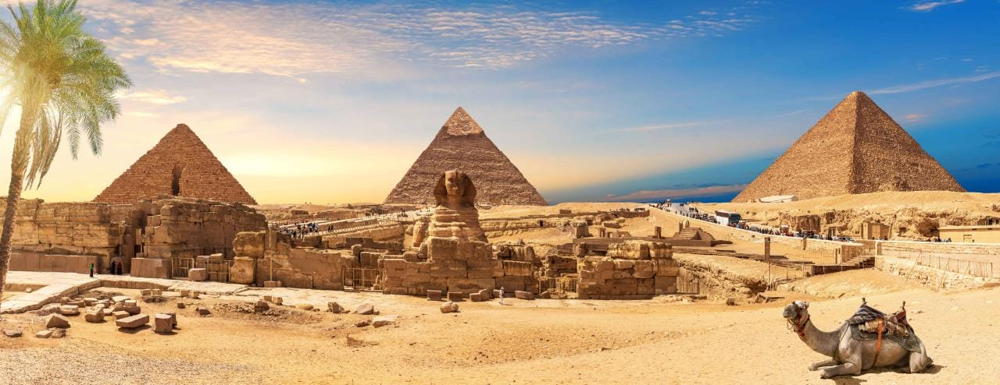
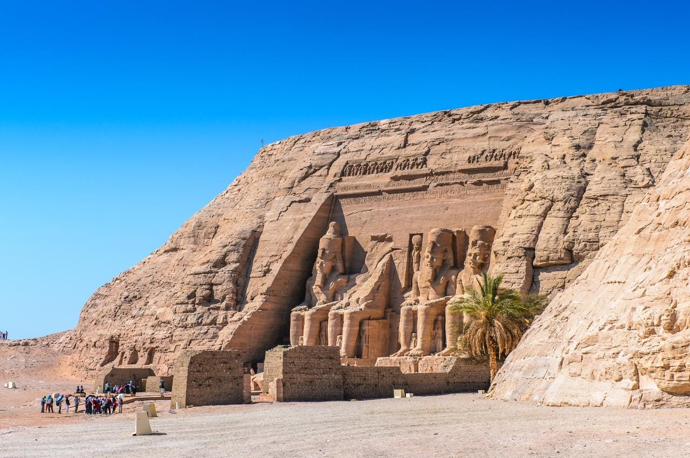

In Cairo & Giza
Explore the UNESCO World Heritage site of Memphis and its necropolises, including the Pyramids of Giza, Saqqara, and Dahshur. Saqqara is home to Egypt’s oldest stone monument, Djoser’s Step Pyramid, while Dahshur shows evidence of the progression in pyramid building techniques to attain the famous smooth surface of the Giza Pyramids. The Giza Plateau is home to the last remaining Wonder of the Ancient World, the Great Pyramid (Khufu), in addition to the famous Sphinx.

In Luxor
Further south lies another UNESCO World Heritage site, Ancient Thebes (the modern-day city of Luxor), where you can discover the beauty of ancient Egypt’s most sacred site, Karnak Temples, which comprises several majestic temples in one complex, located in the east of Luxor. Not far is also Luxor Temple, dedicated to the god Amun. On the west side, you can wander through the breathtaking Temple of Deir al-Bahari, also known as the Temple of Hatshepsut, surrounded by the rugged rock mountain. Hike through the Valleys of the Kings and Queens to explore the tombs that held the treasures of ancient Egypt’s pharaohs and their families, and peek into the past by examining vibrant and detailed wall paintings.

In Aswan and Abu Simbel
The Temple of Philae south of Aswan and the colossal Temples of Abu Simbel on the shores of Lake Nasser are also must-sees on any visit to Egypt. This UNESCO World Heritage site is best known for the four iconic, colossal, seated statues that dominate the façade of Abu Simbel, the awe-inspiring monumental temples carved and cut into the mountain by King Ramesses II as a testament to his strength as ruler of Egypt.